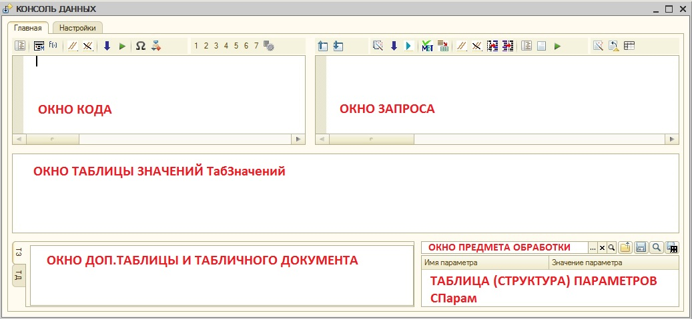
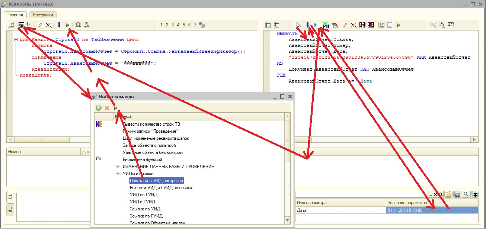
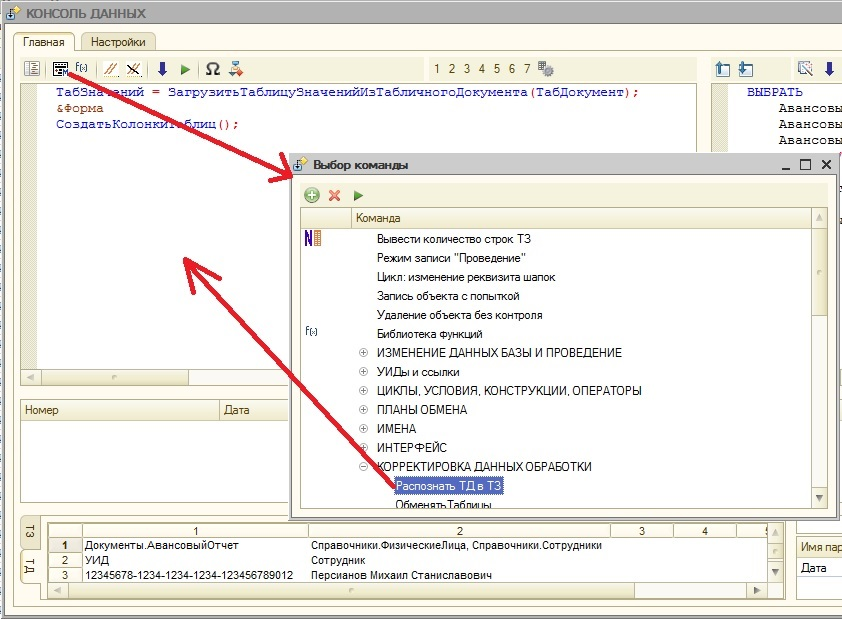

Обработка разработана Персиановым М.С. (2017).
В 2023 полнофункционально адаптирована под управляемые формы.
Использование обработки не допускается, если обработка не куплена у автора, или автор не давал согласия на её использование. Согласие автора на бесплатное использование обработки может быть в любое время отозвано без объяснения причин. Автор не несёт ответственности за ошибки алгоритмов, но гарантирует бесплатное исправление ошибок в обработке (без каких-либо обязательств по срокам и исправлению последствий применения ошибочных алгоритмов). Данная обработка является инструментом, который должен применяться с должной осмотрительностью. Все алгоритмы не могли быть проверены по причине большого объёма проверки. Предполагается, что работать с обработкой должен специалист достаточно квалифицированный, чтобы не допустить нежелательной потери данных. Если Вы не согласны с этими условиями, не следует использовать эту обработку. Автор будет благодарен за замечания по обработке. Принятые замечания будут исправлены совершенно бесплатно.
Обработка является мощным инструментом работы с данными.

Общее описание.
Интерфейс состоит из двух текстовых полей
и меню. Поле кода предназначено для написания произвольного кода на языке 1С, Поле
запроса - для редактирования запроса (но может тоже содержать
исполняемый код). Есть два окна таблиц значений: основной и
дополнительной. Окно табличного документа объединено с окном дополнительной
таблицы. Окно предмета обработки предназначено для выбора произвольного
ссылочного объекта. Ещё одно окно предназначено для формирования структуры
параметров (имя параметра в левом столбце, значение - в правом). Значением
может быть простое или ссылочное значение, список значений, вычисляемая формула
или ссылка на одну из таблиц значений.
Выбор команды из меню.
Все кнопки полей снабжены всплывающими
подсказками.
Вторая слева кнопка над окном кода -
кнопка меню команд. По её нажатию откроется дерево команд. При выборе строки
дерева и нажатии кнопки Сформировать команда будет выполнена. В большинстве
случаев результатом команды будет вставка текста в окно кода. Но некоторые
команды выполняются сразу и могут изменить данные (например, выполнение или
комментирование кода).
В обработке есть макеты СтруктураКоманд и
Команды_, отвечающие за состав команд и их расположение в меню. Но команды
могут быть настроены и из пользовательского режима с помощью сохранения
команды.
Сохранение команды.
В дереве команд есть возможность добавить
или удалить команду. Удаление команды выполняется соответствующей кнопкой.
Удаление предопределённой команды возможно, оно технически исполняется с
помощью добавления «антикоманды». При выполнении добавляемой команды будут
восстановлены те элементы интерфейса, которые были включены в команду при
сохранении. Выполнения кода или запроса при этом не происходит.
Другие функции меню
Заполнение параметров
Возможно автоматическое заполнение
структуры параметров по текстам запроса и кода (кнопки с синей стрелкой вниз в
меню над окнами запроса и кода).
Вставка из конфигурации
Левая кнопка меню над окном кода и такая
же кнопка над окном запроса позволяет вставить в текст кода или запроса имя
объекта конфигурации (справочника, реквизита, табличной части, и т.д.).
Вставка директивы
Директивы предназначены для разбиения
кодов на разделы. Каждый раздел может выполняться на клиенте и сервере на
форме, в модуле объекта или на клиенте в специальной закрытой форме, либо быть
вызываемым алгоритмом – аналогом функции.
Вставка вызова алгоритма
Вставляется код с примерами вызова
алгоритмов. Лишнее убрать напильником.
Преобразование текста
Есть кнопки
комментирования/раскомментирования и преобразования текста заппроса в литерал,
вставляемый в код, и обратно.
Библиотеки
Есть кнопки вставки в поля вызова функций
и запросов из библиотек.
Прочие кнопки
Кнопки выполнения запроса и кода (слева и
справа), включения/отключения МВТ, вывода временной таблицы или результата выполнения
элемента пакета в таблицу, а также вывода СКД в табличный документ и таблицу
значений, и вызов конструктора СКД.
Дополнительная панель
На дополнительной панели в центре окна
есть кнопки вывода реквизитов Предмета в таблицу значений, а также вывода
спозиционированной в таблице табчасти Предмета во вторую таблицу значений, и
обратная запись изменённых реквизитов. Рядом кнопки копирования в специальный
буфер значения активного элемента, и обратная вставка из буфера.
Панель частых команд (ЧАКО)
Панель содержит семь кнопок, запоминающих
последние выполненные команды для быстрого повторного выполнения. Кнопки можно
настроить и зафиксировать на закладке настроек.
.
Окно кода.
Окно кода предназначено для формирования
исполняемого кода на языке 1С.
Директивы кода
Кроме исполняемого кода, в тексте могут
быть использованы директивы:
&Клиент - последующий код (до следующей директивы)
будет выполнен вне контекста основной формы на клиенте
&Форма - последующий код (до следующей директивы) будет выполнен в форме на
клиенте
&Сервер - последующий код будет
выполнен в форме на сервере
&Объект - последующий код будет выполнен в модуле обработки
&Алгоритм - последующий код не будет выполнен, но будет обособлен как
алгоритм. При этом именем алгоритма будет первое слово после &Алгоритм (оно
не войдёт в состав кода алгоритма). Тексты кода алгоритмов будут храниться в
структуре Алгоритмы, доступной при выполнении кода. Алгоритм вызывается функциями ВызватьАлгоритмКлиент/ВызватьАлгоритмФорма/ВызватьАлгоритмСервер/ВызватьАлгоритмОбъект(Алгоритмы[Имя],
Прм_), где Прм_ - структура, ключи которой будут доступны в вызываемом
алгоритме как переменные.
Вызовы доступны из контекстов:
ВызватьАлгоритмКлиент - с клиента и из
формы
ВызватьАлгоритмФорма - из формы
ВызватьАлгоритмСервер - из формы и с
сервера
ВызватьАлгоритмОбъект - из формы, с
сервера и из объекта
Структура Алгоритмы доступна из всех
контекстов.
Структура СПарам формируется из таблицы
параметров. При этом для выполнения в неё могут быть подставлены таблцы,
произвольный код, и т.д., но по завершении кода/запроса исходные параметры не
обновляются. Добавленные в коде параметры появятся и в форме.
Также доступны ДопТаблица, Запрос,
НастройкиСКД, Предмет, СКД, СПарам, ТабДокумент, ТабЗначений, ТекстЗапроса,
ТекстКода - значения берутся из формы до начала и возвращаются после окончания
алгоритма.
Вставка имени
В коде можно использовать имена реквизитов
обработки или элементов интерфейса. С помощью меню можно вставить в код любое
из этих имён. Например, имя основной таблицы значений - ТабЗначений, имя
предмета обработки - Предмет, а имя структуры параметров - СПарам. Кроме того,
в тексте доступны менеджер временных таблиц МВТ, схема компоновки данных СКД и
некоторые другие объекты.
Комментарии.
С помощью кнопок меню можно комментировать
или раскомментировать текст кода или запроса. Для этого строки должны быть
выделены полностью.
Выполнение.
Выполнение кода производится кнопкой
"Сформировать" с зелёным треугольником.
Окно запроса
Окно предназначено для редактирования
текста запроса или исполняемого кода. В случае формирования кода действуют все
правила, применяемые для окна кода, включая директивы.
Преобразования текста.
Текст запроса или отдельные его строки
могут быть закомментированы, раскоменнтированы, преобразованными в текст
запроса в коде и обратно с помощью кнопок меню.
Конструктор запроса.
Для редактирования запроса доступен
конструктор запроса. Для его запуска следует использовать кнопку меню над окном
запроса.
Работа с менеджером внутренних таблиц.
Запрос можно выполнять с
использованием менеджера временных таблиц или без него. Для включения МВТ есть
кнопка над окном запроса. Также в меню есть функция вывода таблицы МВТ в
таблицу значений. МВТ вместе с таблицами также доступен из кода.
Выполнение запроса/кода
Выполнение кода производится кнопкой
"Сформировать" с зелёным треугольником.
Выполнение Запроса производится кнопкой "Сформировать" с синим
треугольником.
Работа с СКД
В обработке есть возможность работы со
схемой компоновки данных, доступной из кода под именем "СКД". Кнопки
меню справа над окном запроса предназначены для работы с СКД. Функци,
выведенные на кнопки:
1.Конструктор СКД
2.Вывод результата работы СКД в таблицу значений
3.Вывод результата работы СКД в табличный документ
Работа с буфером
Обработка предоставляет возможность работы
со встроенным буфером обмена. Он позволяет скопировать любое значение внутри
обработки в любое место (например, из таблицы значений в структуру параметров).
Меню для работы с буфером расположено слева над окном запроса.
Загрузка/сохранение предмета обработки
Правее окна предмета расположены кнопки,
позволяющие открыть реквизиты Предмета в таблице значений, а при
спозиционированном на табчасти курсоре в таблице значений - скопировать
табчасть в доп. таблицу. Там же кнопки, позволяющие сохранить объект с
реквизитами/табчастью из таблиц значений.
Работа с библиотекой функций
Одна из функций, доступных из меню -
открытие библиотеки функций. При использовании БФ функции модуля обработки
автоматически распознаются и выводятся в меню, а выбранная в меню функция
помещается в область кода с комментариями и параметрами.
Макеты обработки
Некоторые настройки обработки заданы
макетами:
СтруктураКоманд - расположение команд в
меню обработки.
Команды_ - Настройка команд: выполняемый код, имя, представления, картинки...
КоллекцияКартинок - коллекция используемых в интерфейсе картинок. К сожалению,
в тонком клиенте не работает, поэтому в УФ используются только библиотечные
картинки.
КартинкиБиблиотеки - список имён библиотечных картинок.
ТекстМодуля - текстовый документ, в который скопирован модуль обработки (в
части библиотеки функций). Служит для распознавания и вывода в меню функций
модуля.
Пример работы с
обработкой
Задача
Вывести в таблицу Excel список документов
(дата и номер). В эту таблицу пользователи введут свои ФИО, и их надо будет
загрузить в документы.
Решение
1.Сформировать запрос (воспользоваться
конструктором, кнопкой заполнения параметров, ввести параметры). Выполнить
запрос.
2.В меню функций найти "Проставить УИД построчно". Во вставленном коде поменять имя реквизита и выполнить код. Получится таблица с номером, датой, ссылкой и УИД. После сохранения в Excel Ссылку можно удалить, а УИД - скрыть.

3.Выбрать в меню функцию распознавания таблицы значений по табличному документу. Если параметры функции непонятны, можно найти её в библиотеке функций - она будет выведена со всеми параметрами и комментариями.

4.Полученный заполненный файл Excel перенести в табличный документ, как показано выше. Указанный на скрине вариант будет искать ФИО сначала в справочнике физлиц, а потом - в справочнике сотрудников. После выполнения кода данные ТД будут распознаны в таблицу значений. Надо будет проверить, что распознались все сотрудники.
5.Найти в меню функций функцию построчной обработки таблицы с корректировкой реквизита шапки, выполнить команду, поправить и выполнить код. Всё, готово.
Сохранение настроек и команд
Виды сохраняемых настроек
Текущие настройки могут быть сохранены и
удалены с закладки Настройки. Текущие настройки восстаналиваются при открытии
обработки, сохраняются при закрытии и с указанной на закладке Настройки
частотой автосохранения. Для отключения автосохранения надо установить
максимальный интервал. В этом случае не произойдёт сохранение при закрытии.
Настройки могут быть сохранены по имени.
Для этого надо ввести имя и нажать кнопку сохранения рядом с именем. При этом
будет возможность выбрать сохраняемые компоненты. Имя настроек отобразится в
списке имён.
Настройки могут быть сохранены и в
выбранный файл.
Настройки могут быть сохранены как общие (для
всех пользователей – нужны права админа) или только для себя.
При восстановлении сначала применяются
типовые настройки, на них – общие, на них – настройки текущего пользователя.
Восстановить можно и настройки выбранного
пользователя, но надо знать их имя, т.к. чужие настройки не запоминаются.
Также можно восстановить настройки из
файла.